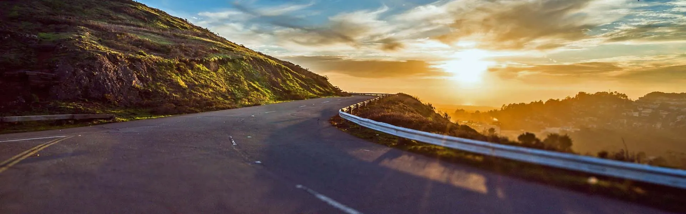

Elevate Studio – webbyrån inom PJM Projekteffektivitet AB
Webbyrån Elevate Studio i Uppsala bygger hemsidor som ger förfrågningar. Elevate Studio är ett varumärke som tillhör PJM Projekteffektivitet AB – samma synsätt på effekt, tillämpat på webben.
Nyheter
Erfarenheter och perspektiv på projekt som ger effekt – och på det som får dem att stanna av.

Vårens stora händelse i skogssverige är såklart övergången till Viol3 den 2 maj. Då byts gamla trotjänaren Viol2 ut mot det helt nya Viol3 som utvecklats under lång tid.

Proteomikbolaget Olink kan med sin världsunika teknik analysera upp till imponerande 6000 proteiner i endast en droppe blod. Projekteffektivitet har under nio månader hjälpt Olinks projektorganisation med effektiviserande åtgärder. Otroligt spännande och kul uppdrag!

Såklart drar vi ett strå till stacken för att hjälpa de utsatta i Ukraina genom UNHCR.
Projekteffektivitet blir en motor i projektledningsmaskineriet som ska ta Telia vidare i kundfronten till Framtidens kundtjänst. Tack för det - Telia!
Spännande uppdrag inlett att utbilda projektledare och vara med och vidareutveckla projektprocessen hos Mellanskog.
Projekteffektivitet har ökat engagemanget i Professionell Ägarstyrning över tiden och bidrar därmed i ännu större utsträckning till utveckling av nystartade bolag med tid och pengar.
Även i år har ni röstat fram SOS Barnbyar till att få årets julpeng från Projekteffektivitet. Vi har även skänkt pengar till Aktiv skola för sitt antimobbingarbete i skolor samt en till en idrottsförening för sitt integrationsarbete. God jul!
Trots vitt skilda verksamheter är många av problemen man stöter på i sina projekt desamma. Polisen driver många typer av olika projekt och har fått en vitamininjektion från Projekteffektivitet i att få ett mer likformigt och effektivt sätt att driva projekten på.
Kul med nya kunder som vill förbättra sitt arbetssätt kring projektgenomförande och projekteffektivitet. Denna gången var det Circle K som ville ta ett kliv vidare i utvecklingen.
I år skänker Projekteffektivitet en julpeng till SOS barnbyar för att stödja deras fina arbete för utsatta barn i världen.
IHM Business School har en av de bästa och mest omfattande vidareutbildningarna för projektledare. Utbildningen har i höst ett nytt vässat upplägg med 17 utbildningstillfällen som ger utrymme att lära sig projektledning - på riktigt.
Sedan några år tillbaka har Projekteffektivitet varit med i Professionell Ägarstyrning AB (PÄAB) och sedan i våras också i styrelsen för PÄABII.
I år skänker vi julpengar till Rädda Barnen! Det är ni besökare på www.projekteffektivitet.se som röstat fram just Rädda Barnen som den organisation som vi i år ska skänka pengarna till - tack för hjälpen!
Strax för sommaren släppte International Project Management Association (IPMA) Individuell kompetensmodell (IKM) för projekt- program- och portföljhantering.
IHM Business School har en av de bästa och mest omfattande vidareutbildningarna för projektledare. Utbildningen har ett termingslångt upplägg med 17 utbildningstillfällen som ger utrymme att lära sig projektledning på riktigt.
Om du har missat Passion for Projects är det dags att anmäla dig till årets event som går av stapeln den 13-14 mars i Malmö. Fram till sista januari är det early bird.
Projekteffektivitets Per Mattsson har varit gästföreläsare på Projektträffen och gästbloggare hos Donald Davies & Partners på temat trender för virtuella projekt och distansarbete.
Projekteffektivitet har genomfört ytterligare ett projektledningsuppdrag för en av våra kunder. Projektet hade en offensiv tidsplan och ett stort innehåll, men samtidigt stora möjligheter till att forma team och arbetssätt.